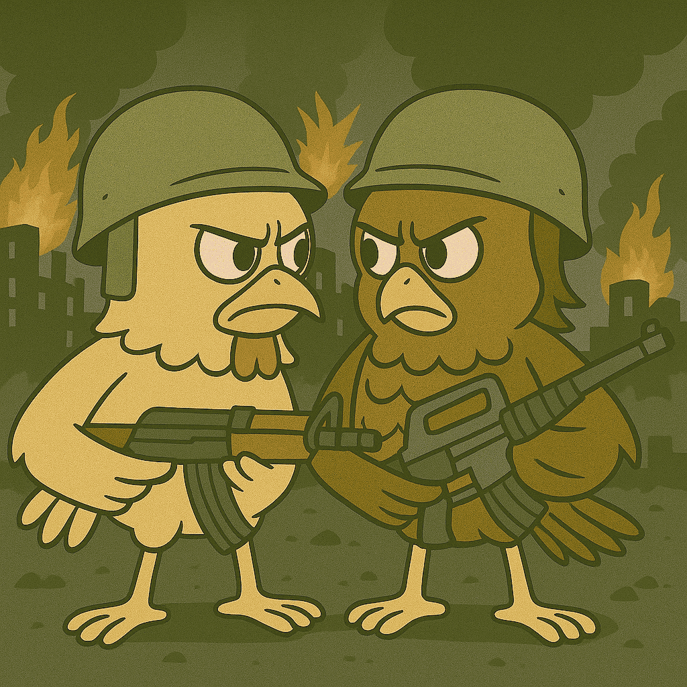
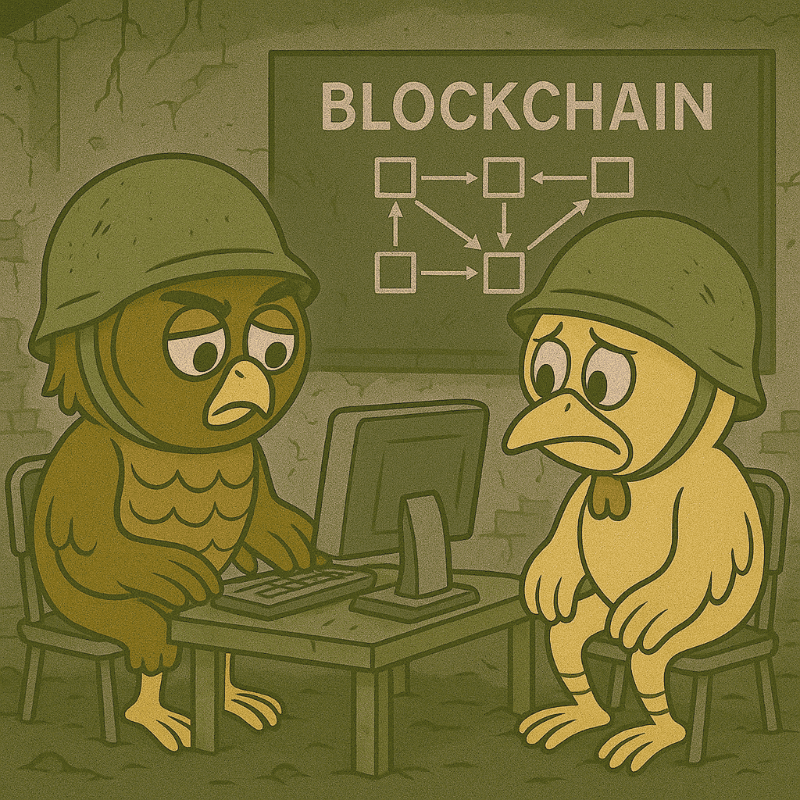

üåç Introduction: The World of Noctavium
Orbiting as the third planet in the GX Andromedae binary star system, just 10 light-years from Earth, lies Noctavium — a world rich in intelligence, history, beauty, and transformation.
Noctavium is the only known life-bearing planet in its solar system. With a stable atmosphere, vast oceans, and a moon similar in size to Earth’s, its surface is divided into four major continents: Aetherya, Khorvaxis, Nymbrosa, and Gallarune. Its seas are ruled by two immense bodies of water: the Tenebris Ocean and the Solyssar Ocean, while its icy extremes are marked by the Borealis Glacier in the north and the Surya Crest in the south.
With a population of approximately 9.5 billion Noctavians, the planet has achieved a remarkable balance between advanced technology and ecological harmony. Its civilizations have colonized nearby rocky planets, constructed orbital space stations, and extended their reach to neighboring star systems — establishing contact with multiple intelligent species.
Today, Noctavium stands as a living example of decentralized cooperation, interstellar diplomacy, and sustainable progress. But this harmony came at a cost. Its past is riddled with tension, division, and historical conflicts that nearly tore the world apart.
This Lorebook does more than chronicle Noctavium's history. It serves as a mirror for humanity — a reflection of what we are, and what we could become. A warning, yes, but also a promise:
The wonders that blockchain can bring to humanity are within reach, if we learn to use them with wisdom, unity, and purpose.
üïäÔ∏è The Origins
Long before orbital cities and blockchain diplomacy, Noctavium was a wild, untamed world of elemental fury and primal instinct. From this crucible emerged two dominant species — the Owlen and the Gallavians, known to humans as the owls and chickens. Though vastly different in form and behavior, both evolved from ancient aerial ancestors that once shared the skies of Aetherya and Gallarune.
The Owlen, born in the towering canopies of Aetherya, developed high intelligence, silent flight, and a deep spiritual connection with the sentient trees. Guided by wisdom and ritual, they built floating sanctuaries and developed early forms of decentralized council rule. Their civilization valued observation, introspection, and harmonious living — with the stars as both their calendar and their compass.
The Gallavians, in contrast, rose from the volcanic forges and rocky valleys of Gallarune. Fiercely adaptive, they were relentless builders and tinkerers. Through fire, pressure, and experimentation, they birthed early machines, forged cities from metal and stone, and prioritized collective efficiency over tradition. For them, survival was progress, and progress meant control over nature.
Despite their differences, the two species remained unaware of each other for millennia, separated by vast oceans and evolutionary paths. But as their civilizations grew and their curiosity turned outward, exploration ships began to cross the oceans — and eventually, paths. The first encounters were filled with awe... then suspicion... and ultimately, competition.
What began as cultural exchange slowly soured into resource disputes, ideological clashes, and mistrust. The world of Noctavium stood at the dawn of a new era — one defined not by evolution, but by choice: coexistence or conquest.
These were the seeds of The Great War — the most devastating conflict Noctavium would ever know, shaping its future, its philosophy, and its very soul.
☠️ The Great War: The War of All Wars
The Great War was the deadliest conflict in Noctavium’s history. It began as tension between two civilizations: the Owlen, who lived in spiritual harmony with nature and believed in decentralized governance, and the Gallavians, who embraced industrial progress and central authority.
As resources dwindled and diplomatic efforts failed, both sides turned radical. Propaganda fueled hatred, and war erupted. The early stages involved firebombs and missile strikes, followed by chemical and biological weapons that devastated cities and populations. Urban battles in cities like Tareth and Lomnex led to mass casualties and shifting control.
In the final year, both factions prepared their nuclear arsenal. A failed rebellion attempted to stop the launches—its members were executed alongside their families. On the infamous Day of Scarlet Fury, over 10 nuclear bombs were dropped, killing more than 50 million in a matter of hours. The skies burned red, and civilization collapsed.
With nothing left to fight for, both sides signed the Ashen Armistice. It wasn’t a victory—just survival. More than 1.3 billion were dead, vast regions were rendered uninhabitable, and Noctavium stood on the edge of extinction.
But from the ashes, the survivors built something new. They created a decentralized system—early blockchain technology—to rebuild trust, prevent abuse, and guarantee no one could ever again control everything.
Noctavium learned the hard way that unchecked power leads to ruin. Their story is not fantasy—it’s a reflection of our own path. Blockchain changed their world. It can still change ours.


×
❮
 ❯
❯
üìñ Glossary of Noctavium
Continents
- Aetherya: Ancestral and spiritual heartland of the owls. Home of the living trees and skybound cities.
- Khorvaxis: Mountainous and foggy. Known for its observatories, martial academies, and tradition-bound culture.
- Nymbrosa: Volcanic plains and artistic coastlines. Birthplace of decentralized governance.
- Gallarune: Solely inhabited by chickens. A hub of industrial innovation and technological progress.
Oceans
- Tenebris Ocean: Storm-ridden waters between Khorvaxis and Gallarune. Holds ancient submerged ruins and naval war history.
- Solyssar Ocean: Warm, vibrant sea between Aetherya and Nymbrosa. A protected ecological gem.
Poles
- Borealis Glacier (North Pole): Mystical and largely unexplored. Sacred to many owls for its natural formations.
- Surya Crest (South Pole): Once a secret military site, now home to joint owl-chicken scientific research bases.
Species
- Owlen: Owl-like species known for their intelligence, silent flight, and spiritual connection with nature. Originated in Aetherya.
- Gallavians: Chicken-like species known for their industrious nature, innovation, and centralized authority. Originated in Gallarune.
Historical Events
- The Great War: The deadliest conflict in Noctavium’s history, fought between the Owlen and Gallavians. It included nuclear strikes and ended with the Ashen Armistice.
- Day of Scarlet Fury: A catastrophic day when over 10 nuclear bombs were dropped, killing more than 50 million and changing the course of Noctavium's history.
- Ashen Armistice: The peace agreement signed at the end of The Great War, marking survival rather than victory.
Cities
- Tareth: Capital city of the Owlen nation. Site of major urban battles during The Great War.
- Lomnex: Capital city of the Gallavian nation. Heavily affected by urban warfare during the conflict.